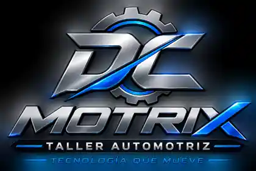

Misión
Brindar servicios automotrices con criterio técnico, diagnóstico responsable y atención honesta.

DC MOTRIXTALLER AUTOMOTRIZDiagnóstico preciso, mantenimiento preventivo y soluciones mecánicas y electrónicas para mantener tu vehículo seguro y en buen funcionamiento.
Solicitar una cita ↗Pedir cotizaciónDC MOTRIX es un taller especializado en mecánica y mecatrónica automotriz, liderado por el maestro Dilmer Carranza. Combinamos tecnología y experiencia técnica para ofrecer diagnósticos precisos, mantenimiento preventivo y soluciones electrónicas avanzadas, con un servicio honesto y profesional.
Brindar servicios automotrices con criterio técnico, diagnóstico responsable y atención honesta.
Ser un taller reconocido en nuestra zona por la calidad del trabajo y la mejora continua.
Honestidad, responsabilidad, seguridad, respeto al cliente y compromiso técnico.

Cambio de aceite y filtros, revisión de niveles e inspecciones programadas.

Evaluación y reparación de fallas en sistemas mecánicos.

Diagnóstico y reparación de componentes del motor.

Inspección de frenos y diagnóstico electrónico ABS.

Revisión de amortiguadores, terminales, rótulas y dirección.

Escaneo, sensores, actuadores y sistemas eléctricos.
Cambio de aceite y filtro, revisión de niveles de fluidos.
Incluye básico más inspección general, frenos, suspensión, dirección y filtros.
Incluye intermedio más refrigeración, batería y carga, escaneo y sistema eléctrico.
Precios de mano de obra. Aceites, filtros, repuestos y materiales se cobran por separado. Otros trabajos se cotizan individualmente.
Consulta por propuestas combinadas de mantenimiento e inspección general.
Los descuentos se evalúan por cotización y se detallan antes de autorizar el trabajo.
Solicita una propuesta según marca, modelo y necesidad de tu vehículo.
Envía el formulario o escríbenos. La solicitud queda pendiente hasta que el taller confirme fecha y hora.
No. Los paquetes publicados son mano de obra. Aceites, filtros, repuestos y materiales se cobran por separado.
Recibimos solicitudes multimarca; la viabilidad se confirma según vehículo y trabajo requerido.
Sí, se coordina según distancia y dificultad. El costo se cotiza previamente.
Se pueden coordinar emergencias las 24 horas, con recargo según el caso.
La cobertura y vigencia se informan por escrito según el servicio y los repuestos utilizados, respetando los derechos del consumidor.
Efectivo, Yape y transferencia bancaria.
Envíanos tus datos y fecha preferida. La cita queda confirmada únicamente cuando el taller responda.
Chiguirip, provincia de Chota, Cajamarca, Perú. Al costado del C. S. Chiguirip.
904 448 613
Escribir ahora09:00–18:00 previa coordinación. Emergencias 24 h con recargo.
Los datos enviados se utilizarán para responder consultas, coordinar citas y preparar cotizaciones. Se tratarán de forma responsable y no se usarán para fines distintos sin base legal o autorización. El titular puede ejercer sus derechos conforme a la normativa peruana de protección de datos personales escribiendo al WhatsApp 904 448 613.
Las citas requieren confirmación. Las cotizaciones pueden requerir inspección. Ningún trabajo adicional se realizará sin comunicar su alcance y costo y obtener autorización. Repuestos y materiales se cotizan aparte salvo indicación expresa. Las garantías se detallan por escrito y no limitan derechos del consumidor.